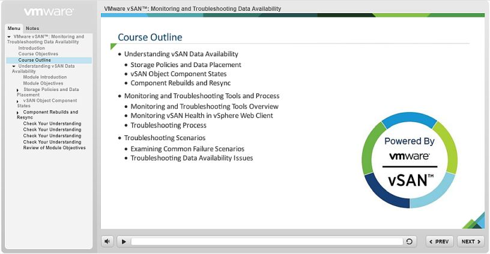

Work Samples
Here's a selection of some recent work.
Creative Instructional design
This video shows how to install and use the agent to integrate SaaS and on-premises applications.
Technical whiteboarding
This example shows how to employ microlearning methodology to structure the content in 10 minute self-contained learning unit.

Visual storytelling
This video shows how to install and use the agent to integrate SaaS and on-premises applications.
Product tutorial
This example shows how to employ microlearning methodology to structure the content in 10 minute self-contained learning unit.
Interactive infographic
This video shows how to install and use the agent to integrate SaaS and on-premises applications.
Micro-learning
This example shows how to employ microlearning methodology to structure the content in 10 minute self-contained learning unit.
Hands-on lab
This video shows how to install and use the agent to integrate SaaS and on-premises applications.
Demonstration
This example shows how to employ microlearning methodology to structure the content in 10 minute self-contained learning unit.